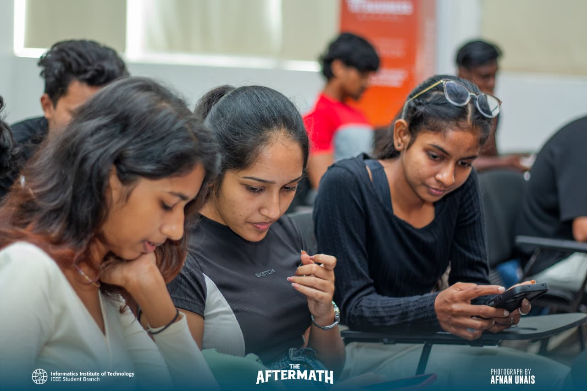
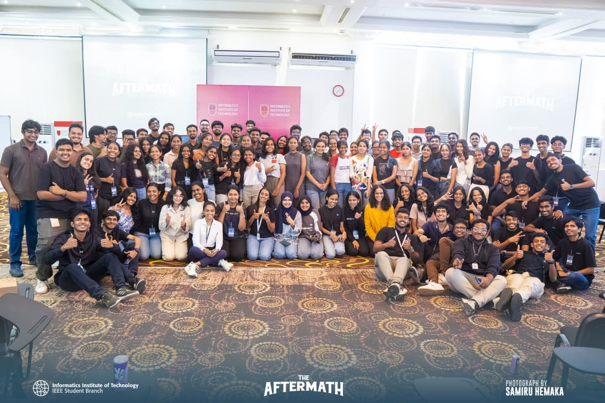
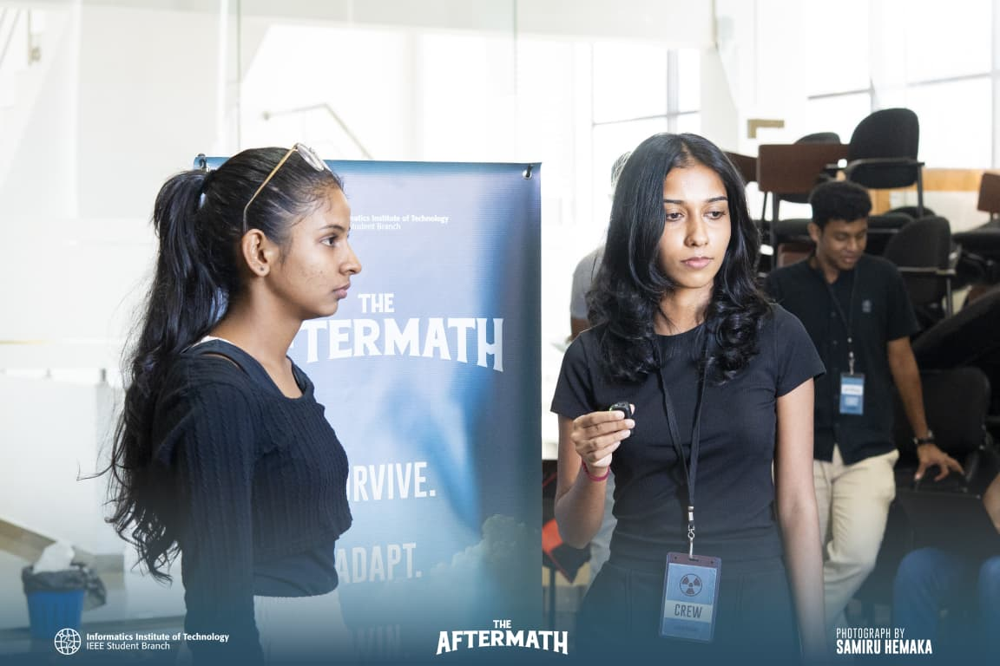
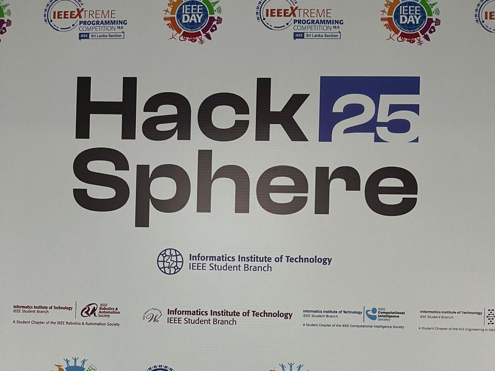
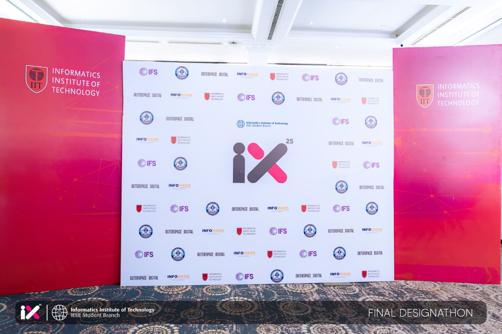
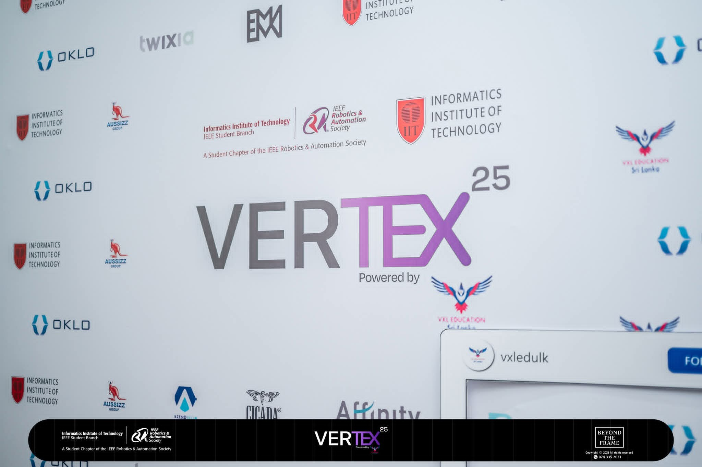
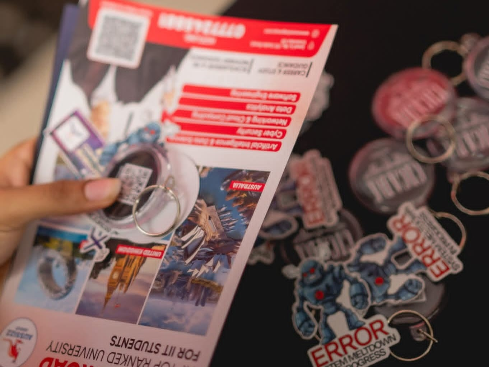

Achievements
1st Place – Aftermath Competition, IEEE Student Branch




Achieved first place in the Aftermath Competition organized by the IEEE Student Branch. Worked collaboratively in a team-based environment to solve challenges requiring strategic thinking, creativity, and effective coordination. The experience strengthened teamwork, analytical thinking, and problem-solving skills in a competitive technical setting.
Participant – IEEE Xtreme 25' Hackathon,IEEE Student Branch


Participated in the global IEEE Xtreme 25-hour programming competition, collaborating with a team to solve algorithmic and programming challenges under strict time constraints. The experience enhanced problem-solving abilities, logical thinking, and teamwork while working in a high-pressure competitive coding environment.
Participant – IX’25 UX Innovation Challenge,IEEE Student Branch



Collaborated in a team to design a high-fidelity UX prototype using Figma, focusing on future human interaction and adaptive interfaces. The project explored innovative design concepts for inclusive and intelligent digital experiences while applying modern UX design principles and collaborative problem-solving.
Participant – Vertex’25, IEEE Robotics and Automation Society (RAS)




Participated in Vertex’25, a premier team-based robotics and automation event organized by the IEEE Robotics and Automation Society. Engaged in hands-on activities focused on robotics concepts, problem-solving, and collaborative technical challenges. The experience provided practical exposure to automation technologies while strengthening teamwork and innovation skills in a competitive environment.